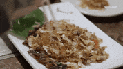

Pad Thai!

Description:
Pad Thai is a flavorful Thai stir-fried noodle dish with rice noodles, eggs, tofu or shrimp, and peanuts, all coated in a sweet and tangy sauce.
Pad Thai was created after World War II to encourage the use of local ingredients like rice noodles and to promote national unity.
Ingredients:
- Rice Noodles
- Eggs
- Garlic
- Bean Sprouts
- Green Onions
- Crushed Peanuts
- Lime
- Your Favourite Protein Source
- Fish Sauce
- Tamarind sauce
- Sugar
- Chilli Flakes
- Cooking Oil
Steps:
- Cook the noodles according to the package instructions, then set aside.
- Heat oil in a pan, then sauté garlic until fragrant.
- Add eggs and scramble until cooked.
- Add protein (chicken, shrimp, or tofu) and cook until done.
- Mix in noodles, bean sprouts, and green onions.
- Pour sauce (fish sauce, tamarind paste, sugar, chili flakes) over everything and stir.
- Serve with lime wedges and crushed peanuts on top.
Home